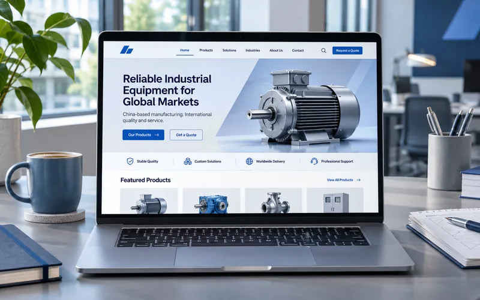
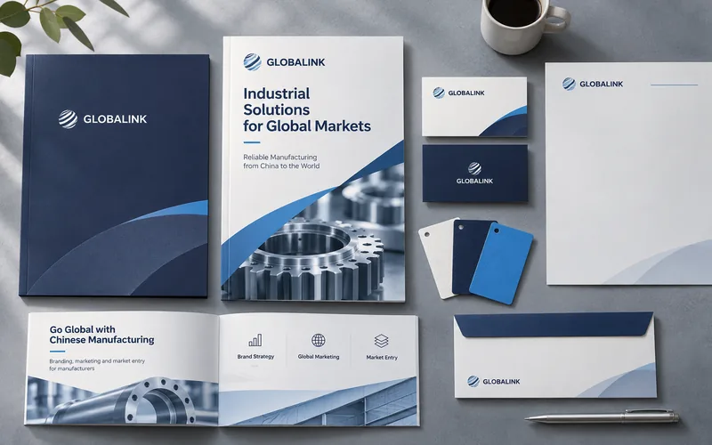
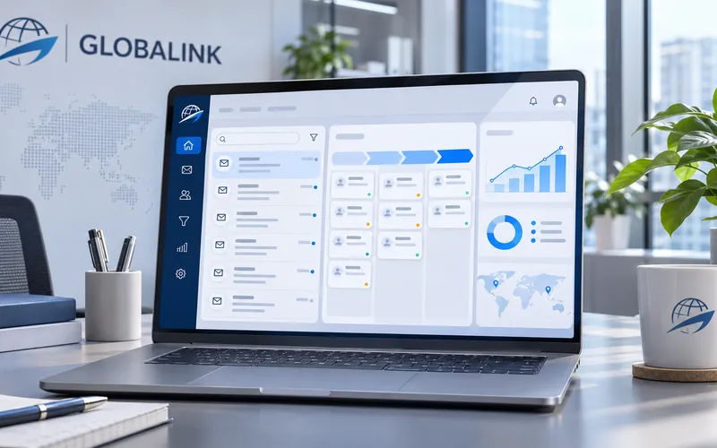
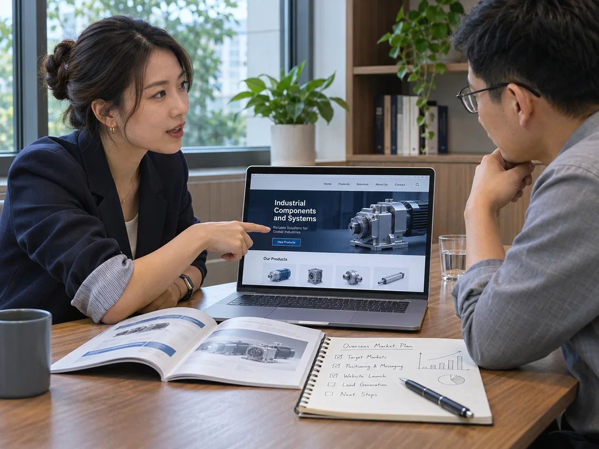

外贸营销型独立站
不是做一个网站，是建一套「按 Google 规则运转」的询盘获客资产。
- 场景化产品落地页体系
- 目标市场节点部署，首屏 ≤ 2 秒
- 结构化数据 + 询盘直达 WhatsApp

产品概念
产品概念
把 AI 引入从需求到软件交付的开发过程。
将软件开发理解为一条从需求梳理、方案设计到编码、检查与交付的工作链。产品概念是让 AI 参与这条工作链，帮助团队组织开发任务与协作过程。
产品概念
产品概念
围绕 NAS 设备与数字资料管理的操作系统。
面向网络存储的操作系统方向，让文件、存储设备与日常管理拥有统一的使用入口。关注企业和个人不断积累的数字资料如何组织、访问与管理。
产品概念
产品概念
产品概念
新网全球邮
从外贸独立站和英文品牌建设，到海外内容推广与询盘跟进。
不是做一个网站，是建一套「按 Google 规则运转」的询盘获客资产。



从产品怎么介绍，到海外买家怎么找到你、发来询盘，方案在同一团队内衔接。
品牌、网站和运营围绕同一份方案推进，产品资料和目标市场信息可以在各环节复用。
从页面结构和搜索关键词，到产品资料和询盘入口，建站时就把买家路径串起来。
记录询盘来源，分类并跟进线索，用阶段复盘决定下一步该改哪些页面和内容。
项目启动时确认各环节的负责人。您通过项目负责人沟通需求、进度和验收。

出海服务从需求沟通开始，提前明确范围、交付和验收。
先了解业务和目标。
范围与费用逐项确认。
关键节点共同检查。
按所选方案安排后续。